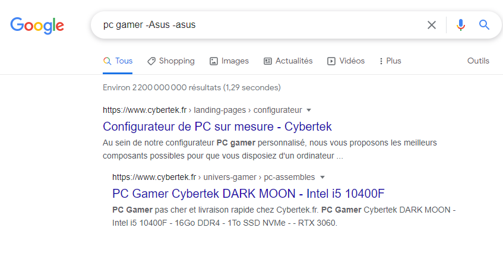

Exclure un mot:
Pour exclure un mot de notre recherche nous devons utiliser le
symbole -
, marquer donc
pc gamer -Asus -asus
nous donnera des résultats qui ne contiennent pas la mention
Asus
ni
asus

Suivant
Précédent
Menu